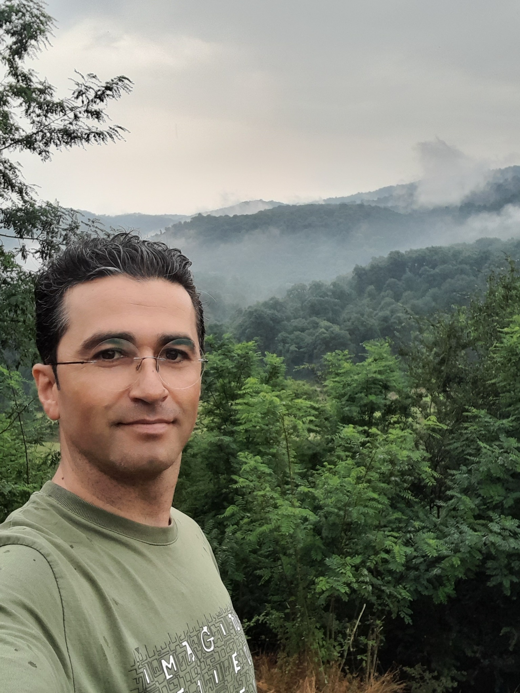
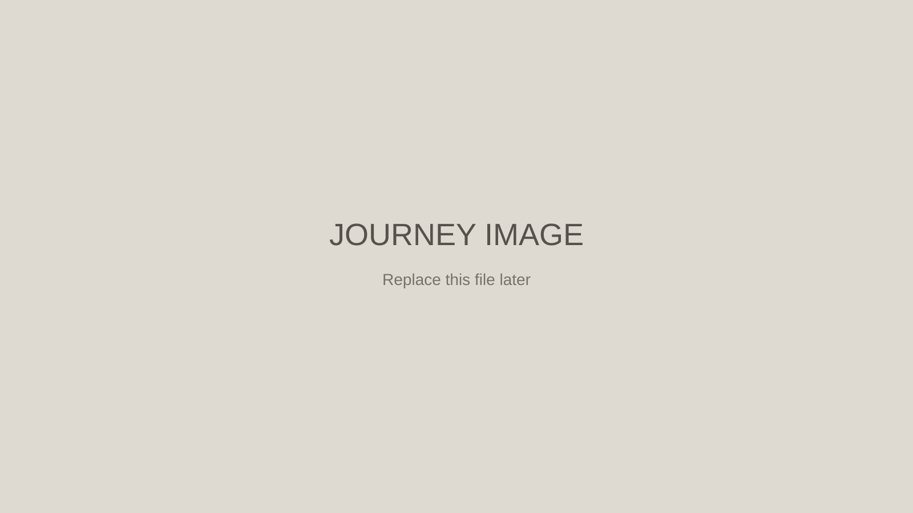
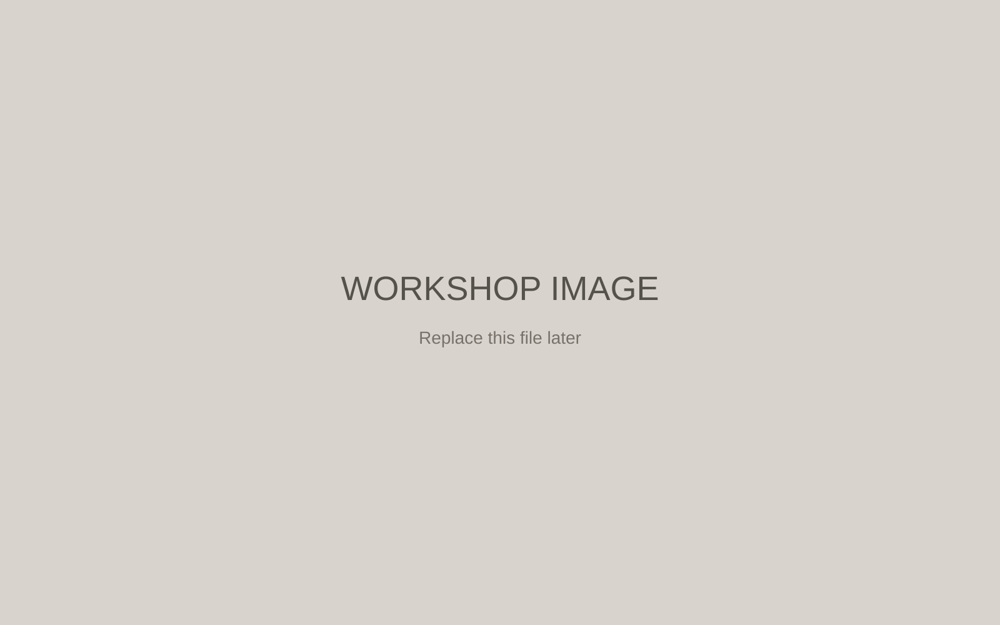

01
بنیانگذار
پیش از آنکه چیزی ساخته شود، باید کسی امکان ساختنش را ببیند.
اینجا قرار است روایت یک عنوان یا یک نام نباشد. روایت انسانی است که سالها فکر کرد، آزمود، ساخت، شکست خورد، دوباره ساخت و مسیرش را ادامه داد.

02
اندیشه بنیانگذار
ساختن، فقط تولید یک محصول نیست.
این بخش بعدها به اندیشهها، نگاه، خلاقیت و اصولی اختصاص خواهد یافت که محمود با آنها زندگی و کار میکرد.
03
مسیر
پانزده سال ساختن
مسیری که همیشه از بیرون دیده نشد؛ اما حاصلش در دانش، تجربه و آنچه ساخته شد باقی ماند.

04
آنچه ساخته شد
از ایده تا واقعیت
اینجا بعدها محصولات، طراحیها، دانش فنی، تصاویر کارگاه و نقاط مهم مسیر ساخت قرار خواهند گرفت.

THE FOUNDER SPIRIT LIVES